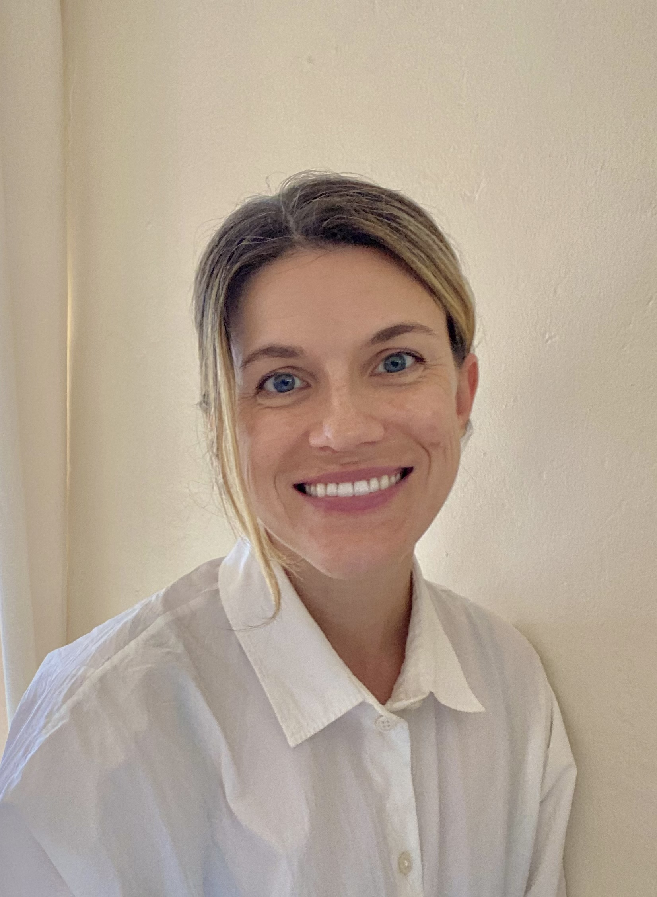

I am a comparative modernist working across British, Irish, South Asian, and early Soviet prose — as well as an educator, literary translator, and occasional essayist. My work sits at the intersection of modernist studies, narrative theory, and empire and postcolonial studies. It queries the relationship of narrative form to the histories of empire, colonial power, and decolonization. I am drawn, above all, to moments of imperial crisis and dissolution — and to fiction's singular capacity to register the felt experience of those moments. A specialist in British, Irish, and Russian modernisms, I have recently extended my research to anti-colonial fiction in India and the West Indies during the interwar period.
I have taught undergraduates at UC Berkeley, adult learners at a public humanities program in Oakland, incarcerated learners at San Quentin State Prison, and high schoolers at The Nueva School. My scholarly work appears or is forthcoming in New Literary History, MFS: Modern Fiction Studies, and the Journal of Narrative Theory. You can see some of my essays and translations in Asymptote, Plume, and the Los Angeles Review of Books.
